Leaflet Web Maps with qgis2leaf
[ Download PDF
A4
Letter ]
Warnung
qgis2leaf plugin is no longer in active development. The functionality of
this plugin is folded into a new plugin called qgis2web.
Leaflet is a popular open-source Javascript library for building web mapping
applications. qgis2leaf plugin provides a simple way to export your QGIS
map to a functioning leaflet-based web map. This plugin is a useful way to get
started with web mapping and create an interactive web map from your static GIS
data layers.
Overview of the task
We will create a leaflet web map of world’s airports.
Other skills you will learn
- Using CASE SQL statement in Field Calculator to create new field values
based on different conditions.
- Locating and using SVG custom icons in QGIS.
Procedure
- Install the qgis2leaf plugin by going to . Note that the plugin is currently marked
experimental, so you will need to check Show also
experimental plugins in Plugin Settings. (See Verwenden von Erweiterungen for more details on
installing plugins in QGIS)

- Unzip the downloaded ne_10m_airports.zip file. Open QGIS and go to
. Browse to the location when the
files were extracted and select ne_10m_airports.shp. Click
OK.

- Once the ne_10m_airports layer is loaded, use the Identify
tool to click on any feature and look at the attributes. We will create an
airport map where we classify the airports into 3 categories. The attribute
type will be useful when classifying the features.
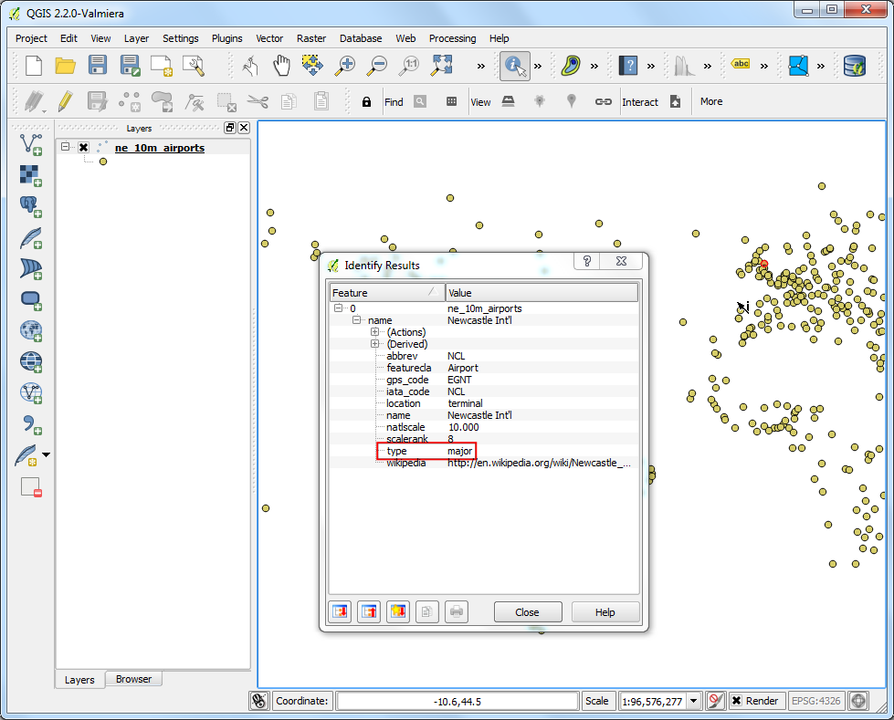
- Right-click the ne_10m_airports layer and select Open
Attribute Table.

- In the attribute table dialog, click the Toggle Editing button.
Once the layer is in editing mode, click the Open Field
Calculator button.

- We want to create a new attribute called type_code where we give major
airports a value of 3, mid-sized airports a value of 2 and all others a
value of 1. We can use the CASE statement and write an expression that
will look at the value of type attribute and create a type_code
attribute based on the condition. Check the Create a new field
box and enter type_code as the Output field name. Select
Whole number (integer) as the Output field type. In
the Expression window, enter the following text.
CASE WHEN "type" LIKE '%major%' THEN 3
WHEN "type" LIKE '%mid%' THEN 2
ELSE 1
END

- Back in the Attribute Table window, you will see a new column at
the end. Verify that your expression worked correctly and click the
Toggle Editing button to save the changes.

- Now we will style the airports layer using the newly created type_code
attribute. Right-click the ne_10m_airports layer and select
Properties.

- Select the Style tab in the Layer Properties dialog.
Select Categorized style from the drop-down menu and choose
type_code as the Column. Choose a color ramp of your choice
and click Classify. Click OK to go back to the main
QGIS window.

- Here you will see a nicely styled airport map. Let’s export this to create
an interactive web map. Go to .

- In the QGIS 2 Leaflet dialog, click Get Layers to
get the refreshed layer list. Select the Full screen option to
have a full screen web map. Choose layer extent as the
Extent of the exported map. Choose a Output project
folder on your system where the plugin will write the output files. Click
OK.
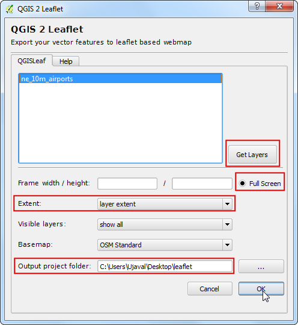
- Once the export process finishes, locate the output folder on your disk.
Open the index.html file in a browser. You will see an interactive web
map that is a replica of the QGIS map. You can zoom and pan around the map
and also click on any feature to get an popup window with attribute
information. You can copy the contents of this folder to a web server to
have a full featured web map.

- Now we will explore some advanced features of this plugin that will allow
you to customize the map further. If you noticed, the popup contained all
the attributes of the feature. Some attributes are not very useful and
overall the pop up looks ugly. We can replace the default popup with our
own custom HTML to make it much better. This is achieved by added the
custom HTML in a column named html_exp. Right-click the
ne_10m_airports layer and select Open Attribute Table.
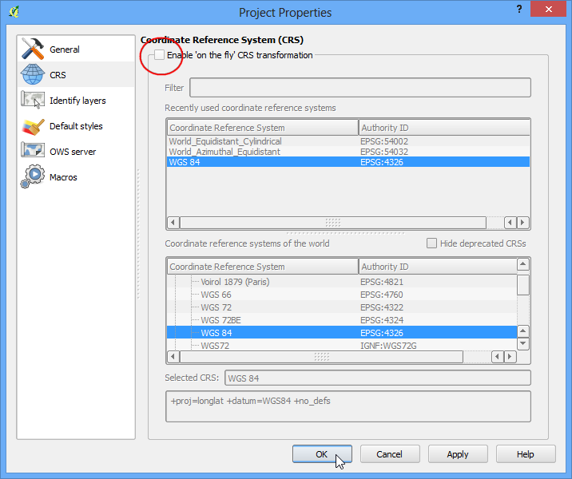
- In the attribute table dialog, click the Toggle Editing button.
Once the layer is in editing mode, click the Open Field
Calculator button.

- Check the Create a new field box and enter html_exp as the
Output field name. Choose Text (string) as the
Output field type. Since we will be creating a long HTML
string, choose 200 as the Output field width. Enter the
following expression in the Expression area. The
complex-looking expression simply defines a HTML table and substitutes cell
values from attributes iata_code, name and type. Check the
Output preview to ensure the expression is correct.
concat('<h3>', "iata_code", '</h3><table>', '<tr><td>Airport Name: <b> ',
"name", '</b></td></tr><tr><td>Category: <b> ', "type",
'</b></td></tr></table>')
Bemerkung
The shapefile format can contain a maximum of 254 characters in a field. If
you want to store longer text in the field, choose another format.

- Back in the Attribute Table window, you will see a new column at
the end. Verify that your expression worked correctly and click the
Toggle Editing button to save the changes.
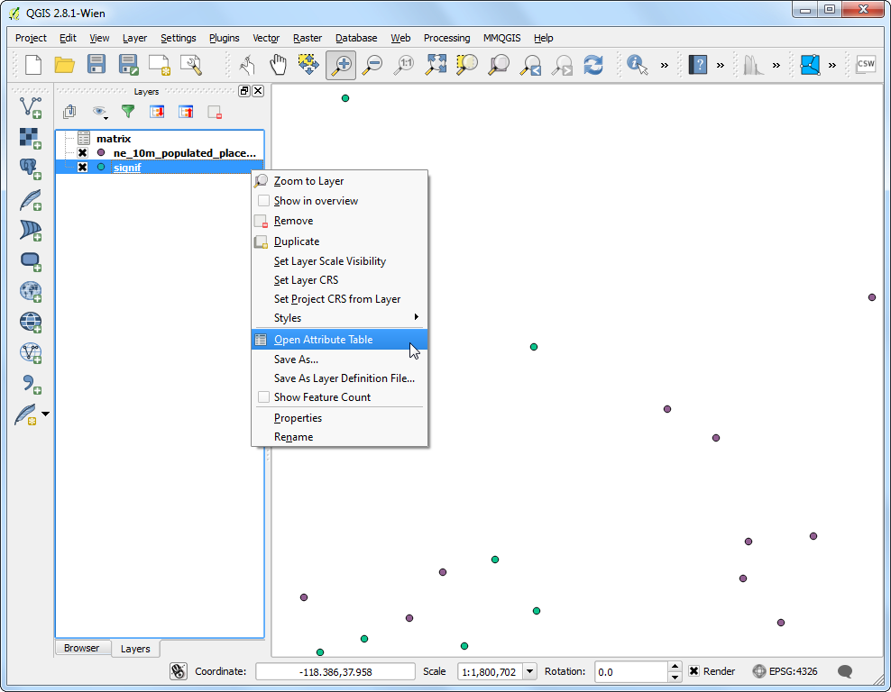
- Now export the map again using .

- Choose the options as before.
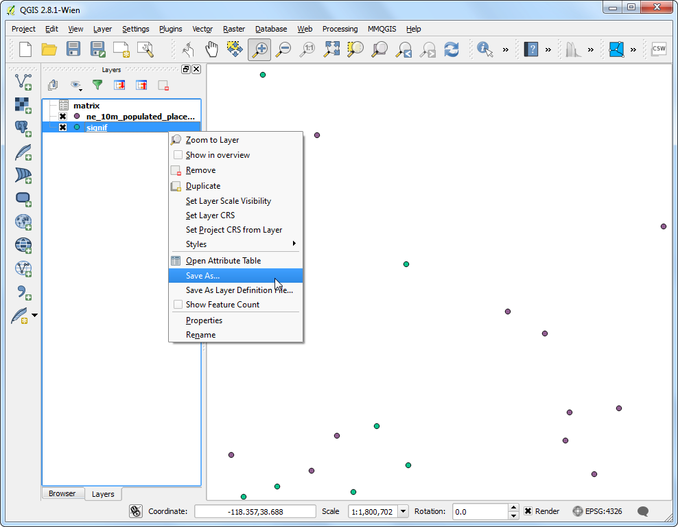
- Go to the output folder once the export process finishes. You will have a
subfolder with the present timestamp. Locate the index.html file inside
it and open it in a browser. Click on any feature and look at the popup.
You will notice that it looks a lot cleaner and informative.

- Another useful feature of the qgis2leaf plugin is the ability to
specify a custom icon to use with the web map. This is accomplished by
specifying the path to the custom icon in a field called icon_exp. We
will create a new layer containing only the major airports and style using
a custom SVG icon. Locate the Select features using an
expression tool from the toolbar.
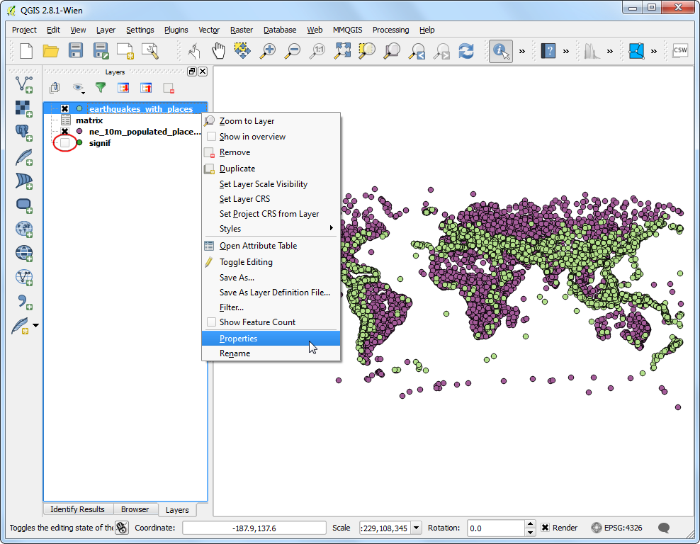
- Enter the expression below and press Select to select all major
airports.
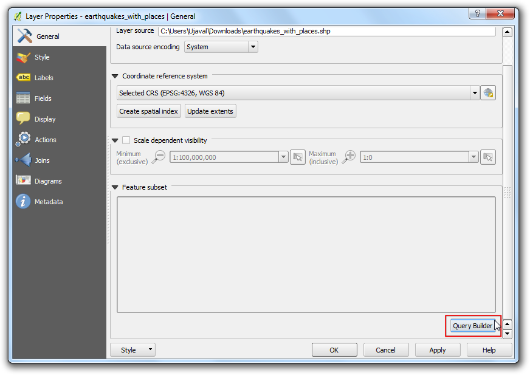
- Right-click the ne_10m_airports airports and select Save
Selection As....

- In the Save vector layer as... dialog, name the output file as
major_airports.shp. Check the Add saved file to map and
click OK.

- Once the major_airports layer is loaded in QGIS, right-click it and
select Open Attribute Table.

- In the attribute table dialog, click the Toggle Editing button.
Once the layer is in editing mode, click the Open Field
Calculator button.
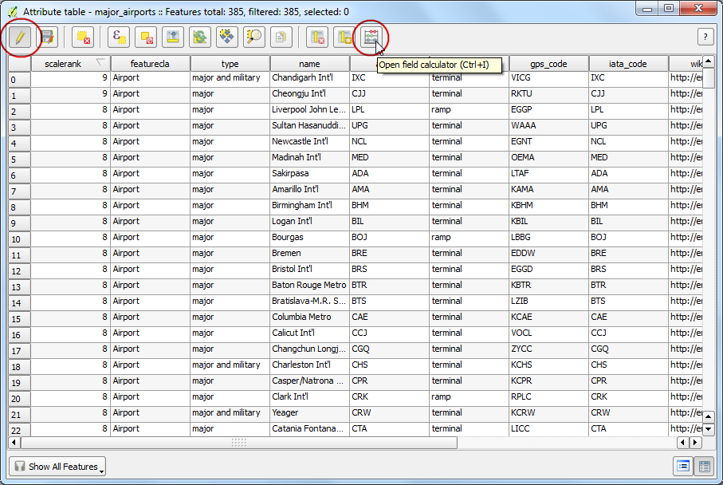
- In Field Calculator dialog, enter icon_exp as the
Output field name. Make it a Text (string) type. In
the Expression area, enter the following expression.
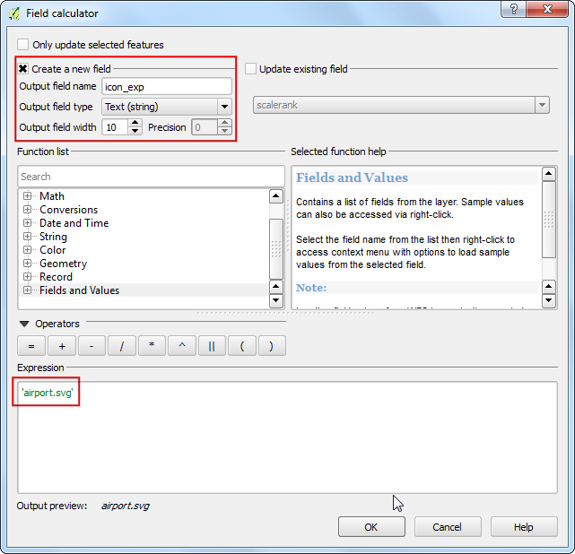
- Save your edits by clicking the Toggle Editing button in the
Attribute Table.
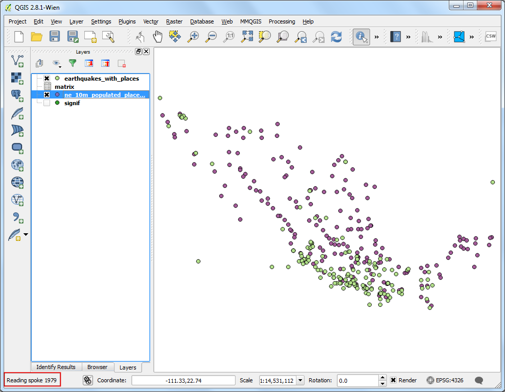
- Open the qgis2leaf plugin from . Click Get Layers
button to fetch both the layers from QGIS. There are many different pre-made tile layers
availalbe for basemaps. In this map, we can try something different and load the Stamen Watercolor as the
Basemap. Click OK.

- If you remember we specified airport.svg as the icon for the airports.
We need to add that icon manually to the output directory. QGIS comes with
a large collection of icons. On Windows, these icons are located at
. The path may
differ depending on your platform and install type. Locate that directory
and choose an icon you like. For our map, we can try the
amenity=airport.svg icon located under transport category.
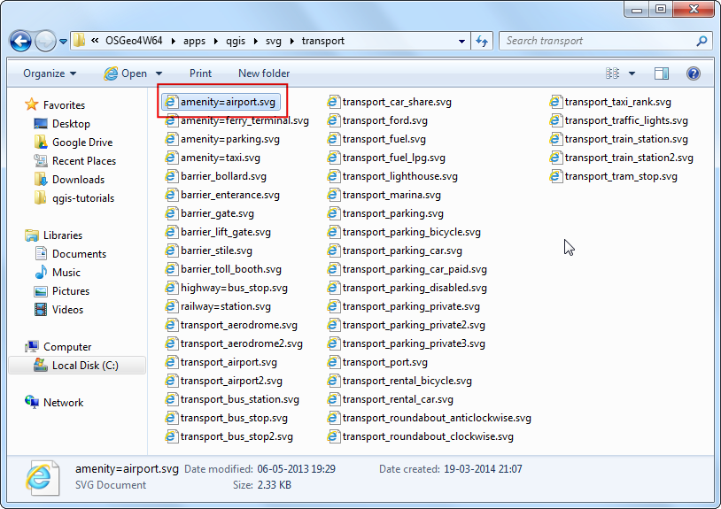
- Copy and paste this icon in the output directory you had specified when exporting
the map. Rename it as airport.svg.

- Now open the index.html file located in the folder. You will see a
beautiful basemap with our custom icons for the major airports. Also notice
the layer panel at top-right corner which has layer display control for
both the layers.
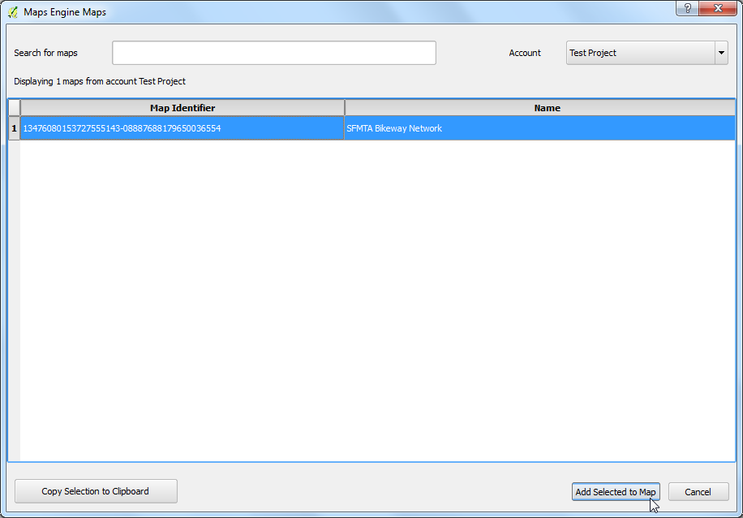
Hope this tutorial gives you a head start in creating web maps. Below is the
live interactive map created for this tutorial.